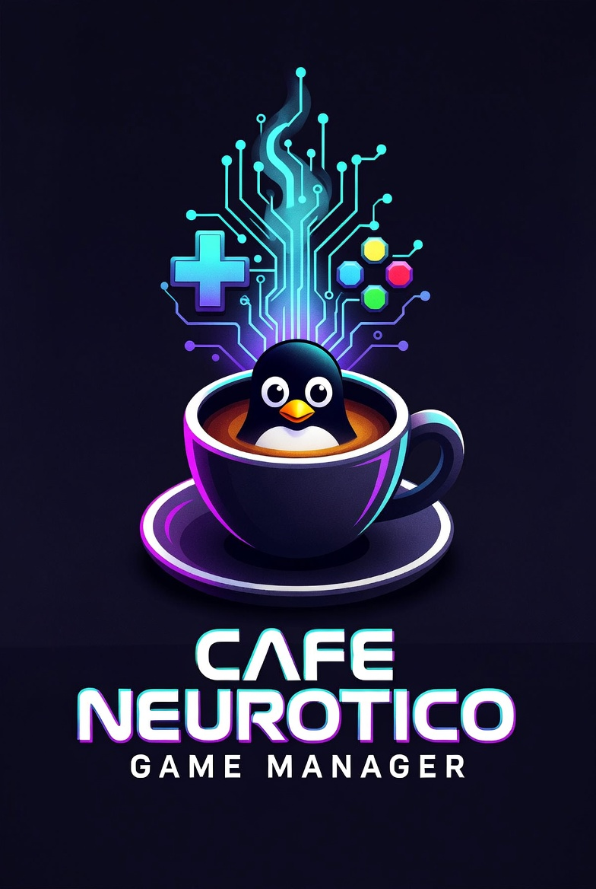
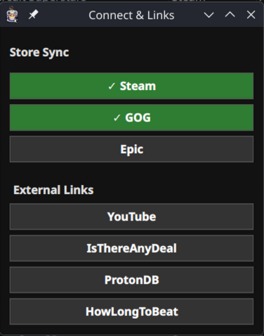
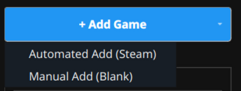
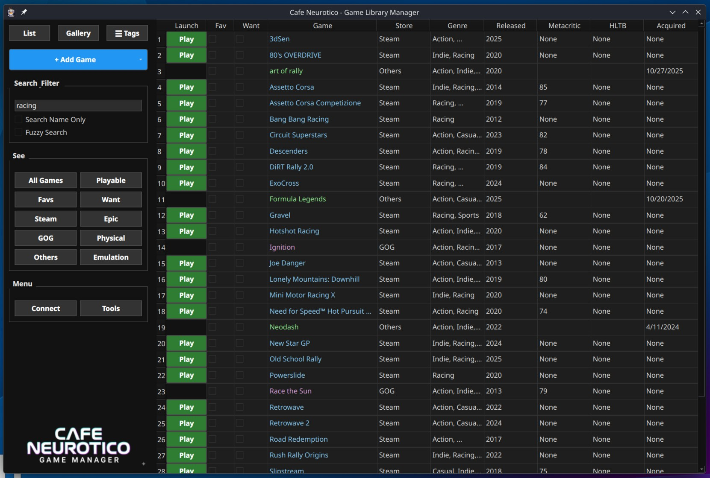
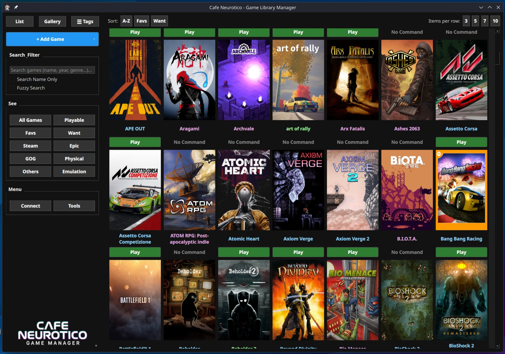
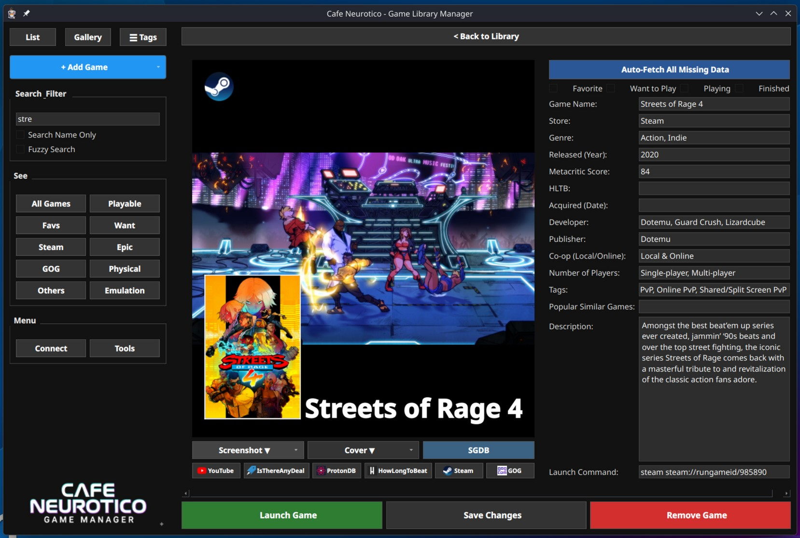
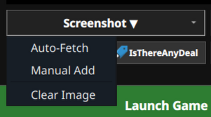
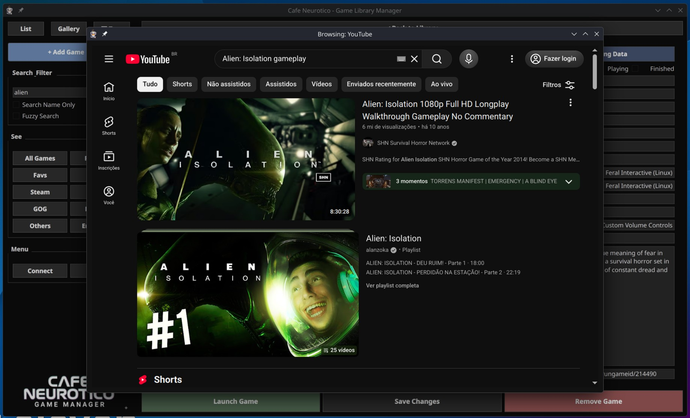
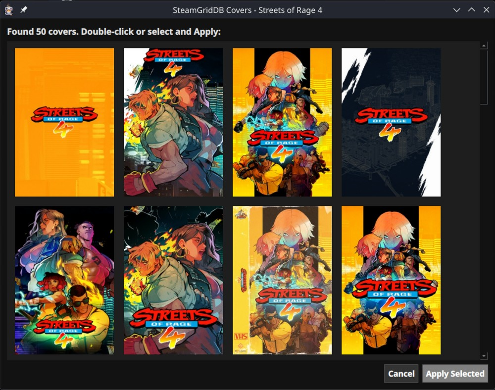
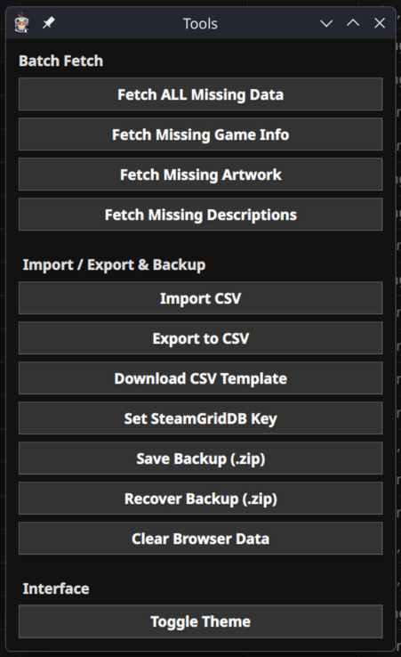

YOUR LIBRARY. MANAGEABLE. SEARCHABLE. PORTABLE. BACKUPABLE.
(Wait, is that even a word?)
Are you neurotic, even obsessive about your library? Data, Year, Genre, Tags... I am! Want to have full control of it? Search it? Edit it? Hell yeah!
I've avoided menus as much as possible. I want to be able to see anything I need right there on the screen, in any of the views, so don't expect any long menus here, there's almost nothing.
Before we dive in, let's get a few technical disclaimers out of the way. This app can be heavy. It contains a full-fledged Chromium-based web browser, responsible for importing libraries and for the navigation when the link buttons are clicked. Also, cover images in gallery view consume RAM, so keep those things in mind.
Oh, I almost forgot to say: all data is stored in a single folder created in the same folder of the app. Only one. Right there. No searching around the system in a sea of config folders (nothing wrong with that, I just didn't want it that way).
Want to import your whole Steam or GOG library? Hit the Connect button in the Menu sector on the left.

Don't want to import your whole library? No problem. Use the + Add Game button at the top left to inject assets individually.

ATTENTION: EXECUTION PROTOCOL
It's not a launcher per se. You still need Steam, Heroic, or whatever you use to launch your games, since it will execute the command you provide. Anything goes, I mean, you can open your calculator app if you wish so.
(Steam games will have this command added automatically when importing your library. You will need to add the command for the other games manually though).
There are 3 views: List, Gallery, and Detailed (this one opens only when a game is double-clicked). The left sidebar remains your constant command center for filtering and searching.
For the true data obsessive. A high-density spreadsheet showing you everything at a glance: Launch status, Favs, Want, Store, Genre, Release Year, Metacritic, HLTB, and Acquired date. Click any header to sort your massive collection instantly.

All about the cover art. A highly visual, grid-based layout. Use the top control panel to adjust the grid density (3, 5, 7, or 10 columns) and sort by A-Z, Favs, or Want to Play.
(Remember the manifesto: Loading a massive grid of high-res covers consumes RAM. You have been warned.)

Want to be able to customize every piece of info about the game, even images easily? Double-click any entry to enter the Detailed View.

This app can do a lot of things that I used to have to do manually, but not everything. For example, the date of purchase (Acquired), which I like to keep record of. So prepare to insert some data manually (or not, if you don't care, that's okay too).
Use the checkboxes at the top to flag games as Favorite, Want to Play, Playing, or Finished. The bottom left holds your Launch Game execution button, Save Changes, and the destructive Remove Game command.
Right below the cover art and screenshots, you'll find the image dropdowns.

You can Auto-Fetch from Steam, manually add your own local files, or clear the image entirely if the data is corrupted or you just want a clean slate.
Want to be able to check YouTube videos (logged in or not), IsThereAnyDeal, HowLongToBeat, ProtonDB, or store pages about that game? The buttons are right there under the image controls.

Because the app contains a full-fledged Chromium-based web browser, clicking these links doesn't kick you out to your desktop browser. It opens a secure internal window, automatically searching for the game's title so you can verify gameplay footage, check Linux compatibility, or see how long it takes to beat, all without leaving the command center.
If you just added a blank entry or your Steam fetch missed something, hit the massive blue ✨ Auto-Fetch All Missing Data button in the Detailed View. The app will scrape the network to fill in the developer, publisher, release year, tags, and grab official artwork.
Official covers are fine, but sometimes you want something custom. If you have your free SteamGridDB API key loaded into the system, hit the SGDB button under the cover art.

A window will pull down the highest-rated 600x900 custom covers for your exact game. Double-click your favorite, and it instantly overwrites the local database image. Perfection.
Click the Tools button in the main left sidebar. This is your administrative console.

Want to batch import a lot of games at once but they don't belong to any library? The app will generate a Template CSV file that you can edit and save in any Excel style app, you save it and then import it easily in the app using the Import CSV button.
Once imported, use the Batch Fetch commands to command the system to scan your entire library and automatically fill in missing info, artwork, or descriptions all at once.
After doing all that (and more), you can create a complete backup, everything included, in a single .zip file, and when installing on another machine, just recover it from within the app. Or if you wish, just zip the folder that contains all data.
games.db and every single cover and screenshot into one portable archive.FULL DISCLOSURE: AI ARCHITECTURE
I am an architect, not a traditional code-monkey. Every single line of code in Cafe Neurotico was generated, assembled, and debugged using advanced AI assistance.
I provided the neurotic vision, the logic, and the UI/UX design. The AI wrote the Python syntax. If you dig into the source code and find unconventional architecture or weird redundancies, that is the machine learning at work.
Feel free to fork it, refactor it, or laugh at it—but it works, and it manages my library perfectly.
=========================================
SYSTEM OPERATIONS CONCLUDED.
COPYRIGHT © CAFE NEUROTICO SYSTEMS.
NOW GO PLAY SOME GAMES.
=========================================